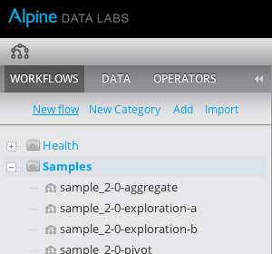
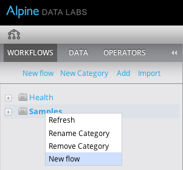
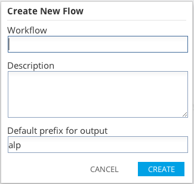

Creating a New Flow
Users with the modeler role can create new flows. The following steps are a guide to creating a new flow in Alpine.
- Choose the Workflow tab in the Explorers panel and click the "New flow" link, or to create a new workflow within a category, right-click a category and select "New flow"
 
- The "Create New Flow" dialog has the following fields:
- Name: Workflow names must be one word and must not contain the following characters: ^ ~ # % & * { } / \ : < > ? | " ' . ;
- Description: (optional) A short description of this flow.
- Default prefix for output: (optional) This prefix will be added to all tables/files generated by running a workflow.
If left blank, Alpine will use the default prefix as defined in the Workflow Variable dialog.

- Once created, the new flow is added to the Workflow tab and selected. Users can then start editing the new flow.